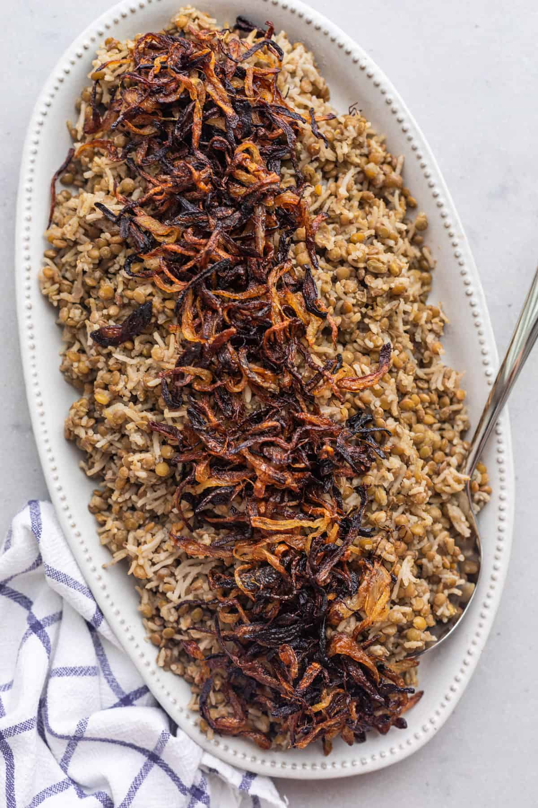

Lebanese Mujadara

Description
Mujadara is an ancient, traditional Middle Eastern recipe
that is often referred to as peasant food because of how
inexpensive and simple it is to make. It's also gluten-free,
dairy-free, and vegan-friendly.
Ingredients
- ½ cup olive oil
- 2 large yellow onions thinly sliced
- 4 ½ cups water
- 2 cups brown lentils rinsed and drained
- Salt
- 1 cup long grain white rice rinsed
- 2 teaspoons cumin
Steps
- In a medium bowl, cover the rice with cold water.
Set aside.
- Line a plate with two paper towels. Heat the olive oil in a large pot over high heat.
Add the onions and cook, stirring constantly, until the onions are deeply browned and start
to crisp around the edges, about 20 minutes.
Transfer to the plate and set aside. They will continue to crisp as they cool.
- Add the lentils and a generous pinch of salt to another pot, add water and stir to combine.
Bring everything to a boil, then reduce the heat to medium-low and cover with a tight-fitting lid.
Cook for 15 minutes.
- Drain the soaked rice, rinse and transfer it to the pot with the lentils. Stir once, then cover again
with a tight-fitting lid and cook undisturbed for 15 minutes.
- Remove the pot from the heat. Rest, covered, for 5 minutes longer. Add the cumin and fluff the rice
and lentils with a fork to combine.
- Spoon the crispy sliced onions on top of the mujadara. Serve warm, with cucumber yogurt sauce if desired.
Recipe by Yumna Jawad